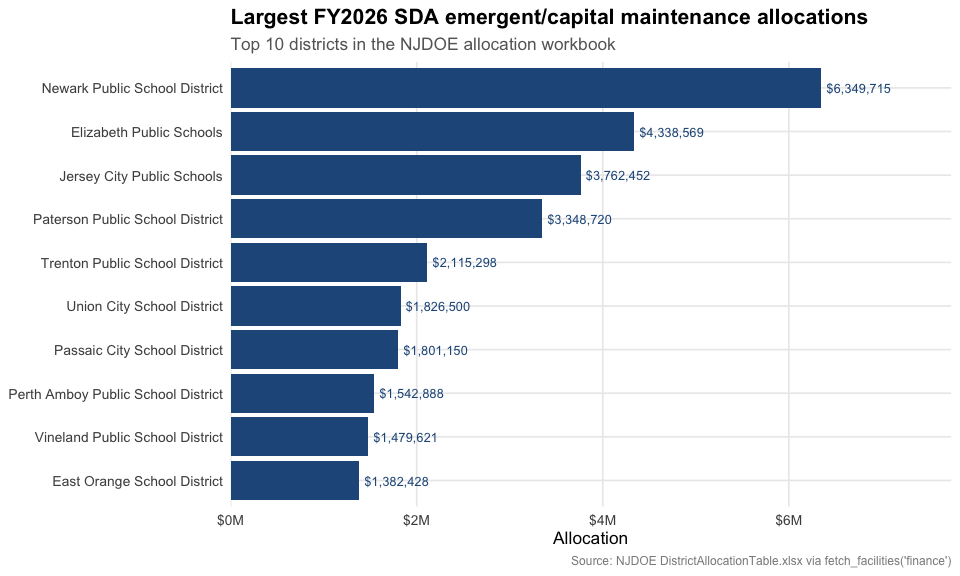
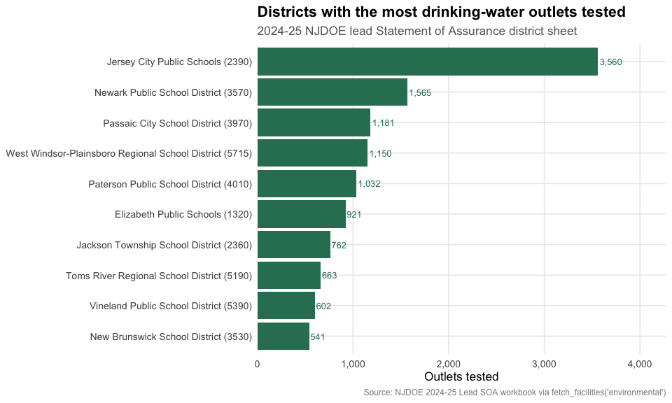
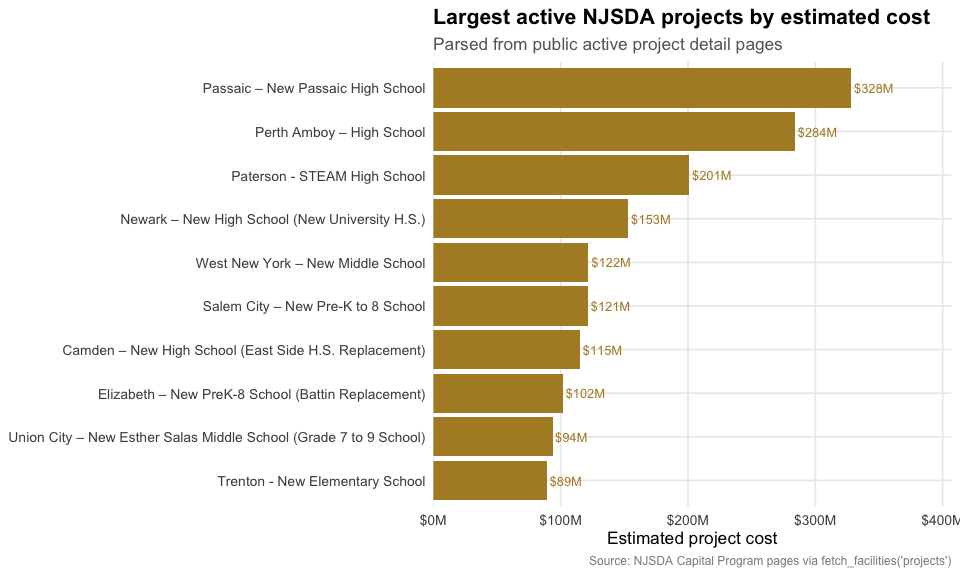
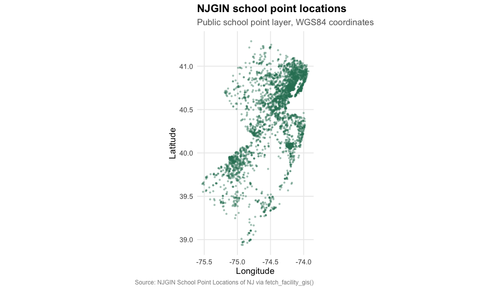

library(njschooldata)
library(ggplot2)
library(dplyr)
library(tidyr)
library(scales)
options(timeout = max(600, getOption("timeout")))
theme_nj_facilities <- function() {
theme_minimal(base_size = 13) +
theme(
plot.title = element_text(face = "bold", size = 16),
plot.subtitle = element_text(color = "gray40"),
plot.caption = element_text(color = "gray55", size = 9),
panel.grid.minor = element_blank(),
legend.position = "bottom"
)
}
nj_green <- "#2F7D62"
nj_blue <- "#235789"
nj_gold <- "#B08B2E"New Jersey facilities data is spread across public NJDOE, NJGIN, and
NJSDA sources instead of one statewide facilities warehouse.
fetch_facilities() keeps that fragmentation visible: every
row carries a category, source agency, source URL, source type, and
vintage. Values stay character until you cast them for a specific
analysis, and missing source cells are dropped rather than filled.
available_facilities <- get_available_facilities()
stopifnot(nrow(available_facilities) > 0)
print(available_facilities)
#> category source source_agency source_type
#> 1 inventory njdoe_cds NJDOE xlsx
#> 2 inventory njgin_school_points NJGIN arcgis
#> 3 attributes njsda_active_projects NJSDA html
#> 4 capacity njsda_active_projects NJSDA html
#> 5 projects njsda_active_projects NJSDA html
#> 6 finance njdoe_sda_allocation NJDOE xlsx
#> 7 environmental njdoe_lead_soa NJDOE xlsx
#> 8 closures njdoe_cds NJDOE xlsx
#> source_url
#> 1 https://www.nj.gov/education/sleds/keydocs/docs/County_District_School_Code_List.xlsx
#> 2 https://services2.arcgis.com/XVOqAjTOJ5P6ngMu/arcgis/rest/services/School_Point_Locations_of_NJ/FeatureServer/0/query
#> 3 https://www.njsda.gov/Projects/CapitalProgram
#> 4 https://www.njsda.gov/Projects/CapitalProgram
#> 5 https://www.njsda.gov/Projects/CapitalProgram
#> 6 https://www.nj.gov/education/facilities/docs/SDA/DistrictAllocationTable.xlsx
#> 7 https://www.nj.gov/education/lead/docs/24-25SOA_SubmissionsLeadDW102825.xlsx
#> 8 https://www.nj.gov/education/sleds/keydocs/docs/County_District_School_Code_List.xlsx
#> vintage
#> 1 CDS list current as of 2026-06-15
#> 2 NJGIN school points modified 2023-05-10
#> 3 NJSDA active capital portfolio, accessed 2026-06-22
#> 4 NJSDA active capital portfolio, accessed 2026-06-22
#> 5 NJSDA active capital portfolio, accessed 2026-06-22
#> 6 FY2026 SDA Emergent/Capital Maintenance allocation
#> 7 2024-2025 Lead SOA submissions, file dated 2025-10-28
#> 8 CDS list current as of 2026-06-151. The FY2026 SDA allocation table publishes 31 district grants
The NJDOE FY2026 SDA Emergent/Capital Maintenance allocation workbook lists 31 district grants totaling $50 million. Newark, Elizabeth, Jersey City, and Paterson receive the largest allocations in this source.
facilities_finance <- fetch_facilities("finance", use_cache = TRUE)
stopifnot(nrow(facilities_finance) > 0)
sda_allocations <- facilities_finance %>%
filter(metric == "sda_grant_allocation") %>%
mutate(amount = as.numeric(value)) %>%
arrange(desc(amount))
sda_summary <- sda_allocations %>%
summarize(
districts = n_distinct(entity_id),
total_allocation = sum(amount, na.rm = TRUE),
largest_allocation = max(amount, na.rm = TRUE)
)
sda_top <- sda_allocations %>%
select(entity_id, entity_name, amount) %>%
head(10)
stopifnot(nrow(sda_top) > 0)
print(sda_summary)
#> districts total_allocation largest_allocation
#> 1 31 5e+07 6349715
print(sda_top)
#> entity_id entity_name amount
#> 1 13-3570 Newark Public School District 6349715
#> 2 39-1320 Elizabeth Public Schools 4338569
#> 3 17-2390 Jersey City Public Schools 3762452
#> 4 31-4010 Paterson Public School District 3348720
#> 5 21-5210 Trenton Public School District 2115298
#> 6 17-5240 Union City School District 1826500
#> 7 31-3970 Passaic City School District 1801150
#> 8 23-4090 Perth Amboy Public School District 1542888
#> 9 11-5390 Vineland Public School District 1479621
#> 10 13-1210 East Orange School District 1382428
stopifnot(nrow(sda_top) > 0)
ggplot(sda_top, aes(x = reorder(entity_name, amount), y = amount)) +
geom_col(fill = nj_blue) +
geom_text(aes(label = dollar(amount, accuracy = 1)),
hjust = -0.08, size = 3.4, color = nj_blue) +
coord_flip() +
scale_y_continuous(labels = label_dollar(scale = 1e-6, suffix = "M"),
expand = expansion(mult = c(0, 0.22))) +
labs(
title = "Largest FY2026 SDA emergent/capital maintenance allocations",
subtitle = "Top 10 districts in the NJDOE allocation workbook",
x = NULL,
y = "Allocation",
caption = "Source: NJDOE DistrictAllocationTable.xlsx via fetch_facilities('finance')"
) +
theme_nj_facilities()
2. The 2024-25 Lead SOA workbook reports 67,086 district outlets tested
The district sheet in NJDOE’s 2024-25 lead Statement of Assurance workbook reports 67,086 outlets tested and 1,842 outlets exceeding the action level. The source also contains one district row where exceeded outlets are greater than tested outlets; the package preserves that source value and documents the caveat instead of guessing a correction.
facilities_lead <- fetch_facilities("environmental", use_cache = TRUE)
stopifnot(nrow(facilities_lead) > 0)
lead_wide <- facilities_lead %>%
filter(entity_level == "district",
metric %in% c("n_outlets_tested", "n_outlets_exceeded")) %>%
select(entity_id, entity_name, metric, value) %>%
pivot_wider(names_from = metric, values_from = value) %>%
mutate(
n_outlets_tested = as.numeric(n_outlets_tested),
n_outlets_exceeded = as.numeric(n_outlets_exceeded)
)
lead_summary <- lead_wide %>%
summarize(
districts = n(),
outlets_tested = sum(n_outlets_tested, na.rm = TRUE),
outlets_exceeded = sum(n_outlets_exceeded, na.rm = TRUE),
pct_exceeded = outlets_exceeded / outlets_tested
)
lead_top_tested <- lead_wide %>%
filter(!is.na(n_outlets_tested)) %>%
arrange(desc(n_outlets_tested)) %>%
select(entity_id, entity_name, n_outlets_tested, n_outlets_exceeded) %>%
head(10)
lead_source_anomalies <- lead_wide %>%
filter(!is.na(n_outlets_tested),
!is.na(n_outlets_exceeded),
n_outlets_exceeded > n_outlets_tested) %>%
select(entity_id, entity_name, n_outlets_tested, n_outlets_exceeded)
stopifnot(nrow(lead_top_tested) > 0)
print(lead_summary)
#> # A tibble: 1 × 4
#> districts outlets_tested outlets_exceeded pct_exceeded
#> <int> <dbl> <dbl> <dbl>
#> 1 582 67086 1842 0.0275
print(lead_top_tested)
#> # A tibble: 10 × 4
#> entity_id entity_name n_outlets_tested n_outlets_exceeded
#> <chr> <chr> <dbl> <dbl>
#> 1 17-2390 Jersey City Public Schools (23… 3560 42
#> 2 13-3570 Newark Public School District … 1565 0
#> 3 31-3970 Passaic City School District (… 1181 0
#> 4 21-5715 West Windsor-Plainsboro Region… 1150 52
#> 5 31-4010 Paterson Public School Distric… 1032 10
#> 6 39-1320 Elizabeth Public Schools (1320) 921 24
#> 7 29-2360 Jackson Township School Distri… 762 18
#> 8 29-5190 Toms River Regional School Dis… 663 25
#> 9 11-5390 Vineland Public School Distric… 602 15
#> 10 23-3530 New Brunswick School District … 541 10
print(lead_source_anomalies)
#> # A tibble: 1 × 4
#> entity_id entity_name n_outlets_tested n_outlets_exceeded
#> <chr> <chr> <dbl> <dbl>
#> 1 21-5510 Robbinsville Public School Dist… 3 169
stopifnot(nrow(lead_top_tested) > 0)
ggplot(lead_top_tested,
aes(x = reorder(entity_name, n_outlets_tested), y = n_outlets_tested)) +
geom_col(fill = nj_green) +
geom_text(aes(label = comma(n_outlets_tested)),
hjust = -0.08, size = 3.4, color = nj_green) +
coord_flip() +
scale_y_continuous(labels = comma,
expand = expansion(mult = c(0, 0.2))) +
labs(
title = "Districts with the most drinking-water outlets tested",
subtitle = "2024-25 NJDOE lead Statement of Assurance district sheet",
x = NULL,
y = "Outlets tested",
caption = "Source: NJDOE 2024-25 Lead SOA workbook via fetch_facilities('environmental')"
) +
theme_nj_facilities()
3. NJSDA active project pages expose a $1.89 billion capital portfolio
The NJSDA active capital program pages currently expose 14 project pages with parsed cost fields totaling about $1.89 billion. Project attributes are reported only where the public page states them explicitly; for example, added capacity is populated for Bridgeton Senior High School and left missing elsewhere.
facility_projects <- fetch_facilities("projects", use_cache = TRUE)
facility_capacity <- fetch_facilities("capacity", use_cache = TRUE)
facility_attributes <- fetch_facilities("attributes", use_cache = TRUE)
project_costs <- facility_projects %>%
filter(metric == "total_estimated_project_cost") %>%
mutate(cost = as.numeric(value)) %>%
select(entity_id, entity_name, cost)
project_capacity <- facility_capacity %>%
filter(metric == "added_capacity") %>%
mutate(added_capacity = as.numeric(value)) %>%
select(entity_id, added_capacity)
project_attributes <- facility_attributes %>%
filter(metric %in% c("new_construction_sq_ft",
"renovation_sq_ft",
"year_constructed")) %>%
select(entity_id, metric, value) %>%
pivot_wider(names_from = metric, values_from = value) %>%
mutate(
new_construction_sq_ft = as.numeric(new_construction_sq_ft),
renovation_sq_ft = as.numeric(renovation_sq_ft),
year_constructed = as.numeric(year_constructed)
)
project_profile <- project_costs %>%
left_join(project_capacity, by = "entity_id") %>%
left_join(project_attributes, by = "entity_id") %>%
arrange(desc(cost))
project_summary <- project_profile %>%
summarize(
active_projects = n(),
total_estimated_cost = sum(cost, na.rm = TRUE),
projects_with_added_capacity = sum(!is.na(added_capacity)),
added_capacity = sum(added_capacity, na.rm = TRUE)
)
project_top_costs <- project_profile %>%
select(entity_id, entity_name, cost, added_capacity, year_constructed) %>%
head(10)
stopifnot(nrow(project_top_costs) > 0)
print(project_summary)
#> active_projects total_estimated_cost projects_with_added_capacity
#> 1 14 1893300000 1
#> added_capacity
#> 1 326
print(project_top_costs)
#> entity_id
#> 1 31-3970-N12
#> 2 23-4090-N03
#> 3 31-4010-N12
#> 4 13-3570-057
#> 5 17-5670-N02
#> 6 33-4630-N01
#> 7 07-0680-040
#> 8 39-1320-N22
#> 9 17-5240-N10
#> 10 21-5210-N09
#> entity_name cost
#> 1 Passaic – New Passaic High School 328100000
#> 2 Perth Amboy – High School 283800000
#> 3 Paterson - STEAM High School 200800000
#> 4 Newark – New High School (New University H.S.) 153000000
#> 5 West New York – New Middle School 121800000
#> 6 Salem City – New Pre-K to 8 School 121300000
#> 7 Camden – New High School (East Side H.S. Replacement) 115000000
#> 8 Elizabeth – New PreK-8 School (Battin Replacement) 101500000
#> 9 Union City – New Esther Salas Middle School (Grade 7 to 9 School) 93700000
#> 10 Trenton - New Elementary School 89400000
#> added_capacity year_constructed
#> 1 NA NA
#> 2 NA NA
#> 3 NA NA
#> 4 NA NA
#> 5 NA NA
#> 6 NA NA
#> 7 NA NA
#> 8 NA NA
#> 9 NA NA
#> 10 NA NA
stopifnot(nrow(project_top_costs) > 0)
ggplot(project_top_costs, aes(x = reorder(entity_name, cost), y = cost)) +
geom_col(fill = nj_gold) +
geom_text(aes(label = dollar(cost, scale = 1e-6, suffix = "M", accuracy = 1)),
hjust = -0.08, size = 3.4, color = nj_gold) +
coord_flip() +
scale_y_continuous(labels = label_dollar(scale = 1e-6, suffix = "M"),
expand = expansion(mult = c(0, 0.24))) +
labs(
title = "Largest active NJSDA projects by estimated cost",
subtitle = "Parsed from public active project detail pages",
x = NULL,
y = "Estimated project cost",
caption = "Source: NJSDA Capital Program pages via fetch_facilities('projects')"
) +
theme_nj_facilities()
4. NJGIN publishes 3,736 school point locations
fetch_facility_gis() is the spatial companion to
fetch_facilities(). It returns NJGIN school points as an
sf object when sf is installed, or a plain
data frame with latitude, longitude, and WKT when
sf = FALSE.
facility_points <- fetch_facility_gis("school_points", sf = FALSE, use_cache = TRUE)
stopifnot(nrow(facility_points) > 0)
point_summary <- facility_points %>%
summarize(
points = n(),
points_with_coordinates = sum(!is.na(latitude) & !is.na(longitude)),
school_types = n_distinct(school_type, na.rm = TRUE)
)
point_types <- facility_points %>%
count(school_type, sort = TRUE) %>%
head(8)
print(point_summary)
#> points points_with_coordinates school_types
#> 1 3736 3736 294
print(point_types)
#> school_type n
#> 1 ELEMENTARY SCHOOL 1498
#> 2 <NA> 599
#> 3 MIDDLE SCHOOL 354
#> 4 FOUR-YEAR HIGH SCHOOL 301
#> 5 COUNTY VOCATIONAL-TECHNICAL SCHOOL OR INSTITUTE 59
#> 6 KINDERGARTEN SCHOOL 47
#> 7 PRESCHOOL 47
#> 8 PRE K-GRADE 8 45
stopifnot(nrow(facility_points) > 0)
ggplot(facility_points, aes(x = longitude, y = latitude)) +
geom_point(color = nj_green, alpha = 0.35, size = 0.7) +
coord_quickmap() +
labs(
title = "NJGIN school point locations",
subtitle = "Public school point layer, WGS84 coordinates",
x = "Longitude",
y = "Latitude",
caption = "Source: NJGIN School Point Locations of NJ via fetch_facility_gis()"
) +
theme_nj_facilities()
Data notes
-
Inventory and closures: NJDOE
County/District/School Code workbook, current as of June 15, 2026.
Closures come from the workbook’s
Updatessheet whereAction TakenisDELETED. -
GIS: NJGIN School Point Locations of NJ ArcGIS
FeatureServer. Geometry is returned separately by
fetch_facility_gis(); latitude and longitude are also available as inventory metrics. - Projects, capacity, and attributes: NJSDA public active capital program pages, accessed June 22, 2026. Fields are populated only when the page text explicitly states the value.
- Finance: NJDOE FY2026 SDA Emergent/Capital Maintenance allocation workbook.
- Environmental: NJDOE 2024-25 Lead Statement of Assurance workbook. The source contains one district row where exceeded outlets are greater than tested outlets; the package preserves the reported exceeded value and drops only impossible negative count cells.
-
Not yet shipped:
conditionandcapital_needsare part of the standard facilities vocabulary, but New Jersey does not yet have a verified populated public statewide bulk source in this package for those categories.
sessionInfo()
#> R version 4.6.1 (2026-06-24)
#> Platform: x86_64-pc-linux-gnu
#> Running under: Ubuntu 24.04.4 LTS
#>
#> Matrix products: default
#> BLAS: /usr/lib/x86_64-linux-gnu/openblas-pthread/libblas.so.3
#> LAPACK: /usr/lib/x86_64-linux-gnu/openblas-pthread/libopenblasp-r0.3.26.so; LAPACK version 3.12.0
#>
#> locale:
#> [1] LC_CTYPE=C.UTF-8 LC_NUMERIC=C LC_TIME=C.UTF-8
#> [4] LC_COLLATE=C.UTF-8 LC_MONETARY=C.UTF-8 LC_MESSAGES=C.UTF-8
#> [7] LC_PAPER=C.UTF-8 LC_NAME=C LC_ADDRESS=C
#> [10] LC_TELEPHONE=C LC_MEASUREMENT=C.UTF-8 LC_IDENTIFICATION=C
#>
#> time zone: UTC
#> tzcode source: system (glibc)
#>
#> attached base packages:
#> [1] stats graphics grDevices utils datasets methods base
#>
#> other attached packages:
#> [1] scales_1.4.0 tidyr_1.3.2 dplyr_1.2.1
#> [4] ggplot2_4.0.3 njschooldata_0.9.24
#>
#> loaded via a namespace (and not attached):
#> [1] utf8_1.2.6 sass_0.4.10 generics_0.1.4 stringi_1.8.7
#> [5] hms_1.1.4 digest_0.6.39 magrittr_2.0.5 evaluate_1.0.5
#> [9] grid_4.6.1 timechange_0.4.0 RColorBrewer_1.1-3 fastmap_1.2.0
#> [13] cellranger_1.1.0 jsonlite_2.0.0 httr_1.4.8 purrr_1.2.2
#> [17] codetools_0.2-20 textshaping_1.0.5 jquerylib_0.1.4 cli_3.6.6
#> [21] rlang_1.2.0 withr_3.0.3 cachem_1.1.0 yaml_2.3.12
#> [25] otel_0.2.0 tools_4.6.1 tzdb_0.5.0 curl_7.1.0
#> [29] vctrs_0.7.3 R6_2.6.1 lifecycle_1.0.5 lubridate_1.9.5
#> [33] snakecase_0.11.1 stringr_1.6.0 fs_2.1.0 ragg_1.5.2
#> [37] janitor_2.2.1 pkgconfig_2.0.3 desc_1.4.3 pkgdown_2.2.0
#> [41] pillar_1.11.1 bslib_0.11.0 gtable_0.3.6 glue_1.8.1
#> [45] systemfonts_1.3.2 xfun_0.59 tibble_3.3.1 tidyselect_1.2.1
#> [49] knitr_1.51 farver_2.1.2 htmltools_0.5.9 labeling_0.4.3
#> [53] rmarkdown_2.31 readr_2.2.0 compiler_4.6.1 S7_0.2.2
#> [57] readxl_1.5.0